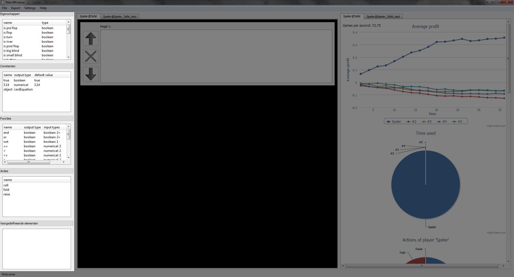
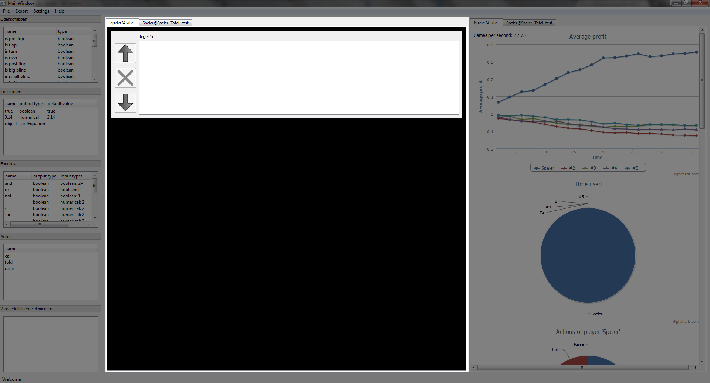
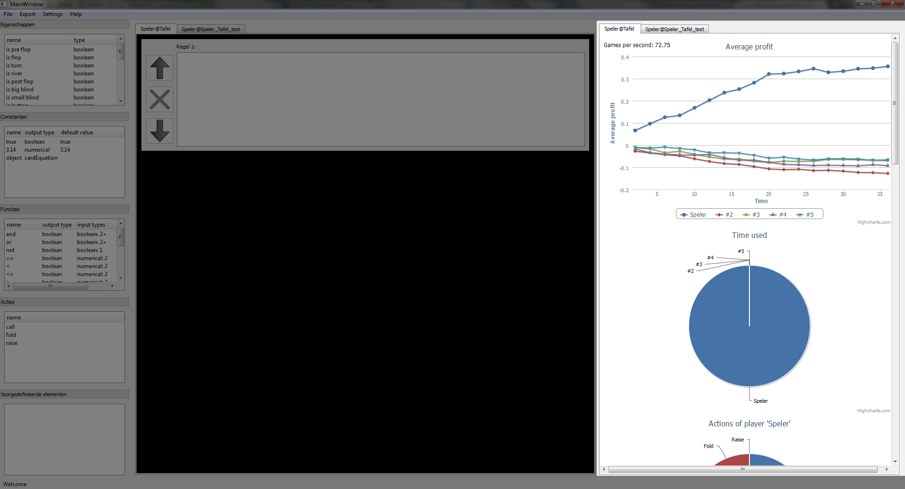
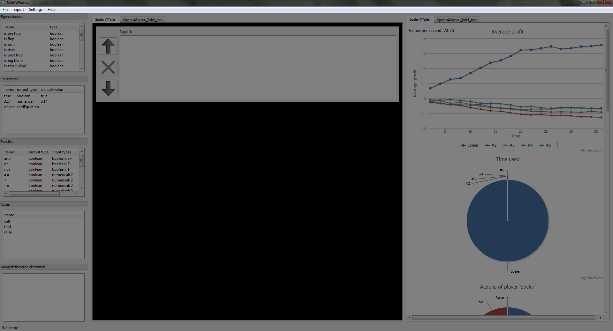
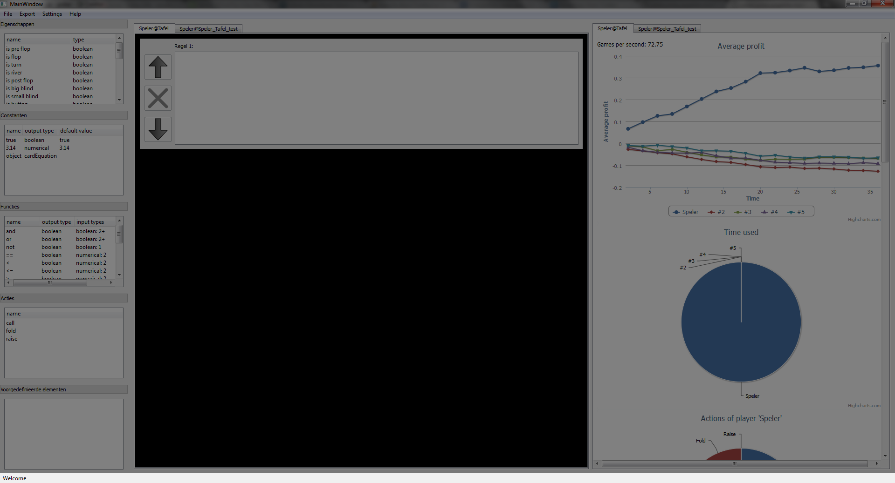

RuleCreator is een programma waarmee je regels voor een pokerbot kan maken. Het maken van de regels gebeurt op een grafische manier via drag & drop. Als de regels gemaakt zijn is het mogelijk om de overeenkomstige prologcode te bekijken. Het is ook mogelijk om de regels te exporteren naar een tafel. In het programma is er plaats voorzien om de resultaten te bekijken van de pokerbot. Zo kun je zien hoeveel de gemiddelde winst is, hoeveel tijd een bot inneemt en welke acties een bot het meest doet.
Het venster van ruleCreator is opgedeeld in vijf delen. Twee ervan zijn nodig om de regels voor de pokerbot te maken. Eén deel wordt gebruikt om de statistieken te tonen en de andere twee delen doen om informatie te verschaffen of om de code te exporteren, bekijken, opslaan, enz.
Aan de linkerkant staan de elementen waarmee je de regels voor de pokerbot kan maken. De elementen kan je slepen naar het middengedeelte om regels te construeren. Onderaan is er plaats om
zelfgemaakte element te plaatsen. Dit kan gedaan worden door de gewenste elementen te slepen van het middengedeelte naar het linkergedeelte.

In het midden is er plaats om de regels van de pokerbot te maken. Het is mogelijk om meerdere regels te maken. De volgorde van de regels kan gewijzigd worden met de pijltjes en regels
verwijderen kan met het kruisje. Het middengedeelte biedt plaats voor verschillende tafels. Bovenaan zijn er tabs waarmee je de regels voor verschillende tafels kan selecteren.

Het rechtergedeelte toont de statistieken van een bepaalde pokertafel. De statistieken worden in grafieken voorgesteld. De belangrijkste is de bovenste grafiek. Deze toont hoeveel de
gemiddelde winst is van elke speler. Eronder staat in relatieve vorm hoeveel tijd de server nodig heeft om de regels van elke speler te interpreteren. Daaronder staat voor elke speler
welke acties uitgevoerd worden. Net zoals het middengedeelte biedt het rechtergedeelte ook ondersteuning voor tabs.

RuleCreator heeft ook een menu. Via het "Bestand"-menu van RuleCreator kunnen regels opgeslagen of geladen worden. Het "Exporteer"-menu zorgt ervoor dat de gemaakte regels kunnen verzonden
worden naar de server. Via het "Instellingen"-menu kan de Prologcode bekeken worden of kunnen nieuwe connecties met de server gelegd worden. Het "Help"-menu biedt extra informatie aan zoals
dit bestand.

Onderaan in RuleCreator is er een statusbar. De statusbar toont informatie over de status van het programma. Zo kun je zien of het programma bezig is met code te exporteren of dat code correct
geëxporteerd was.
